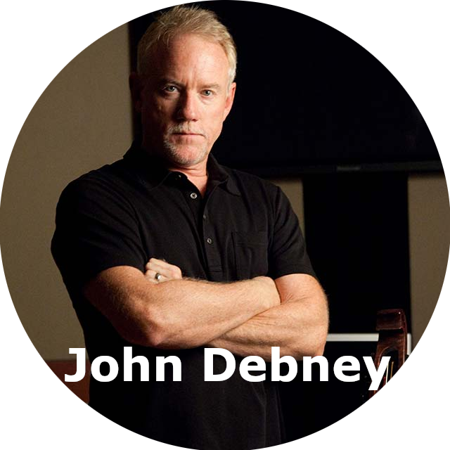
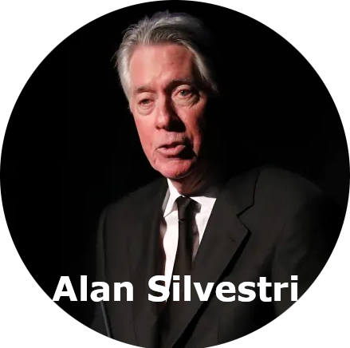

BRIAN TYLER is a composer and conductor of over 70 films and was named Film Composer of the Year at the 2014 Cue Awards. Tyler composed the score for blockbuster hits such as Avengers: Age of Ultron, Furious 7, Iron Man 3, Thor: The Dark World, and the breakout hit Crazy Rich Asians featuring a big band jazz and romantic string score that was voted to the 2019 Oscar shortlist for Best Original Score

Hans Zimmer has scored more than 200 projects across all mediums and has been honored with an Academy Award®, two Golden Globes®, three Grammys®, an American Music Award, and a Tony® Award.
Notable scores of Zimmer’s include Gladiator, The Thin Red Line, As Good as It Gets, Rain Man, The Dark Knight trilogy, Inception, Thelma and Louise, Black Hawk Down and The Last Samurai.
Known for his music on stage and screen, he is noted for his multiple works with the Walt Disney company (The Little Mermaid, Beauty and the Beast, Aladdin), as well as Broadway stage musicals Sister Act and Little Shop of Horrors. With eight Academy Awards,
Alan has received more Oscars than any living person, and is the recipient of numerous other awards including Golden Globes, Grammys, Drama Desk Awards, and a Tony Award.

For over 30 years, four-time Oscar nominee Danny Elfman, has established himself as one of the most versatile and accomplished film composers in the industry.Elfman has scored over 100 films, including: Milk (Oscar nominated), Good Will Hunting (Oscar nominated), Big Fish (Oscar nominated), Men in Black (Oscar nominated), Edward Scissorhands, Batman, To Die For, The Nightmare Before Christmas, Alice in Wonderland, Silver Linings Playbook, American Hustle, Justice League, Spiderman.

Mr. Williams has composed the music and served as music director for more than one hundred films. His 40-year artistic partnership with director Steven Spielberg has resulted in many of Hollywood’s most acclaimed and successful films, including Schindler’s List, E.T.: The Extra-Terrestrial, Jaws, Jurassic Park, Close Encounters of the Third Kind, four Indiana Jones films, Saving Private Ryan, Amistad, Munich, Hook, Catch Me If You Can, Minority Report, A.I.: Artificial Intelligence, Empire of the Sun, The Adventures of TinTin and War Horse

Considered one of the most prolific and successful composers in Hollywood, Debney has won 3 Emmy’s and been nominated for 7, he is also an Academy Award nominee, and the youngest recipient of ASCAP’s prestigious Henry Mancini Lifetime Achievement Award.Debney’s most commercially successful work to date is Disney’s live-action adaptation of The Jungle Book, directed by Jon Favreau, released in 2016.Other works include Elf, Iron Man 2, Spy Kids (1 & 2), and I Know What You Did Last Summer.
British composer Rachel Portman became the first female composer to win an Academy Award, which she received for the score of Emma.
Rachel has written over 100 scores for film, television and theatre, including Manchurian Candidate (Jonathan Demme), Oliver Twist (Roman Polanski), Hart’s War (Greg Hoblit), Only You (Norman Jewison),, The Legend of Bagger Vance (Robert Redford), Beloved (Jonathan Demme), Benny and Joon (Jeremiah Chechik), Life is Sweet (Mike Leigh)
In recent years, McCreary has become increasingly recognized for his musical innovation. His iconic theme for AMC’s decade-long record-shattering global phenomenon The Walking Dead is one of the most popular in the medium today. He won a Primetime Emmy Award for Outstanding Main Title Theme for his theme to David S. Goyer’s epic historical fantasy Da Vinci’s Demons.McCreary also received Emmy nominations for his work on the pirate drama Black Sails, along with his brassy-score for Marvels Agents of S.H.I.E.L.D., helped pave the way for large orchestral scoring to return to television

In his ongoing, decades-long career as a composer, Alan Silvestri has blazed an innovative trail with his exciting and melodic scores, winning the applause of Hollywood and movie audiences the world over. With a credit list of over 100 films Silvestri has composed some of the most recognizable and beloved themes in movie history. His efforts have been recognized with two Oscar nominations, two Golden Globe nominations, three Grammy awards, two Emmy awards, and numerous International Film Music Critics Awards, Saturn Awards, and Hollywood Music In Media Awards.